分治法(4)：求最近点对
Last updated on May 5, 2025 pm
本文以“寻找平面上最近点对”问题为核心，探讨了如何设计和分析能解决该问题的分治算法。
让我们从研究一个“寻找平面上最近点对”的有趣问题。给定个点，要求输出两个相距最近的点。
最直接的想法是暴力法，即计算所有个点对，并输出距离最小的。这种做法的时间复杂度为，因此我们应该比做得更好。
那么，有什么方法可以改进呢？我们曾经说过，想要降低时间复杂度，我们必须看看我们是否做了冗余的操作。在这个问题中，就是
有没有点对可以不用比较，即不用计算距离，就可以确定不是最小的。
如果是人类完成这个事情，ta一定不会把所有点两两计算距离，那些看起来很远的点对就不会被计算。但是，计算机如何知道哪些点“看起来很远”呢？
从一维情况出发
二维的情况看起来有点复杂，让我们先从一维开始，即考虑所有点都在一条线上的情况（不妨假设所有点都在x轴上）。
明显可以看出，我们似乎只要比较相邻的点对即可，距离很远的点对是不需要比较的。因此，我们就有了通过排序来减少无用计算的思路。我们在一维情况下得到如下的算法，即先把所有点按x坐标排序，再比较相邻的点对。
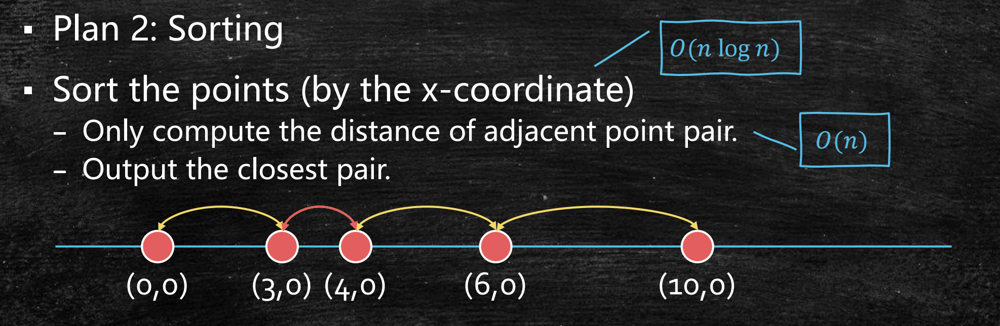
分治法框架
那么，我们如何把一维情况应用到二维呢？别忘了，我们有分治法！
还记得，分治法的设计无非两件事：
- 怎么分：如何将原问题拆成规模更小的子问题
- 怎么治：子问题的解如何合并成原问题的解
首先，怎么分？延续一维情况的思路，我们可以
- 先将所有点按x坐标排序（先假设所有点的x坐标不同），
- 再画一条竖线，使得其两侧分别有个点。
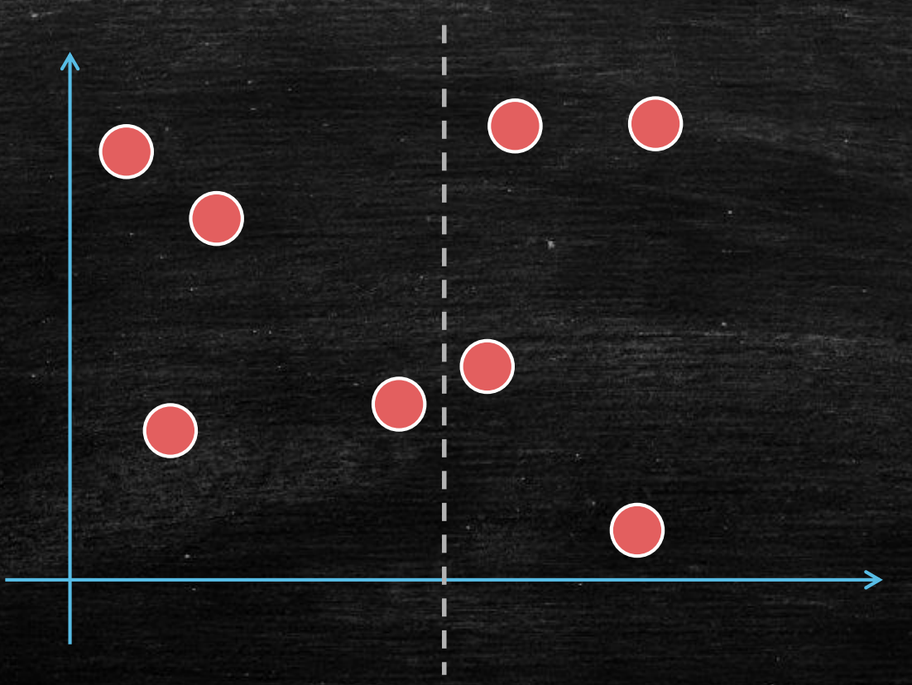
通过递归，分治法会分别找到竖线两侧距离最近的点对。接下来，怎么治？也就是如何找到整张图中距离最近的点对？
与求逆序数类似，我们已经知道了竖线左侧最近的点对、竖线右侧最近的点对，我们还需要知道跨过竖线的最近点对（即一个点在竖线左侧，另一个点在竖线右侧）。再比较这三个最近点对的距离，输出最小的即可。
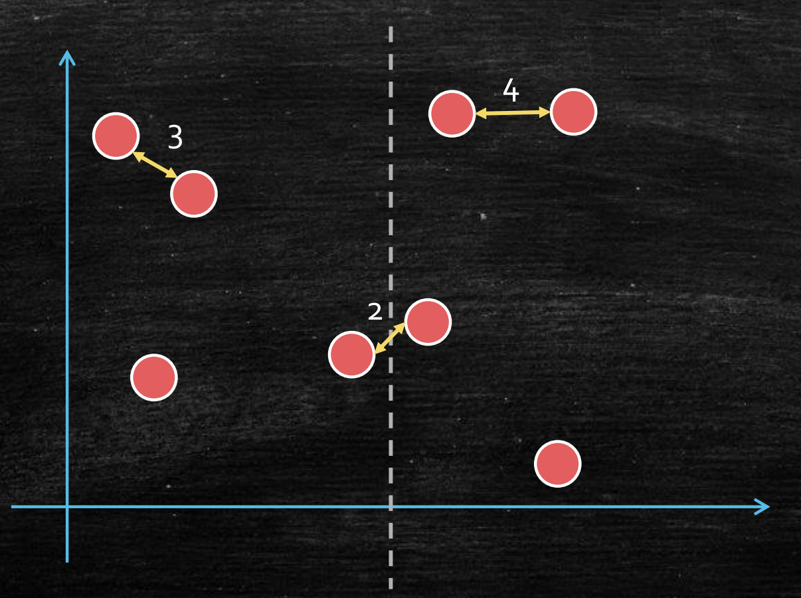
寻找竖线两侧的最近点对
现在唯一的问题就是，如何找到跨过竖线的最近点对？
最直接的方法，就是比较所有跨过竖线的个点对。但不用我多说，你们一定知道这会让算法的时间复杂度回到，因为只是换了比较顺序，并没有减少任何比较。不信的话，下图中进行了时间复杂度分析。
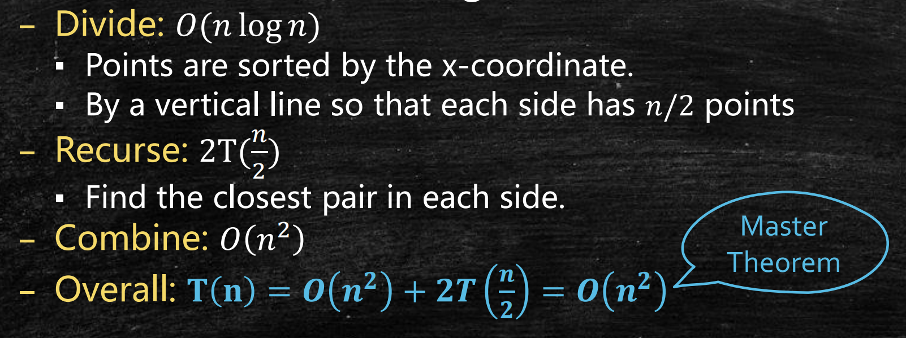
并且我们可以看到，确实是合并操作的主导了时间复杂度，排序的并没有影响。因此，我们可以保留排序。
第1个聪明想法——只看2条状区域
想要减少时间复杂度，就要减少冗余操作。那么，有什么操作是冗余的呢？
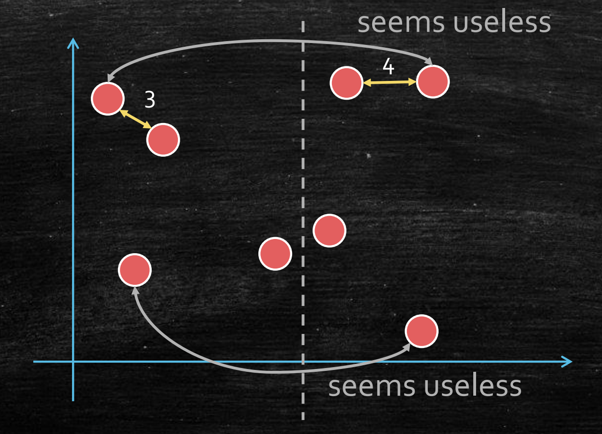
与一维情况一致，核心想法是，我们不用计算所有点对的距离，即忽略相隔太远的点对。目前，所有点已经按x轴坐标排序，所以我们已经掌握了一些x方向的信息，可以尝试先筛选掉x方向距离过大的点。
为了方便起见，我们记：
- 竖线左侧最近点对的距离为
- 竖线右侧最近点对的距离为
容易想到，x方向距离超过的点对是不需要计算的，因为他们的距离一定超过了目前的最小距离。
既然如此，我们在原先竖线（即中线）的两侧各 处，再分别画一条竖线。这样，落在两条竖线外侧的点，不需要参与跨过中线的最近点对的计算，因为他们和对面任何一个点的x方向距离就已经超过。所以，我们只需要关注两条竖线之内（即条状区域内）的点。
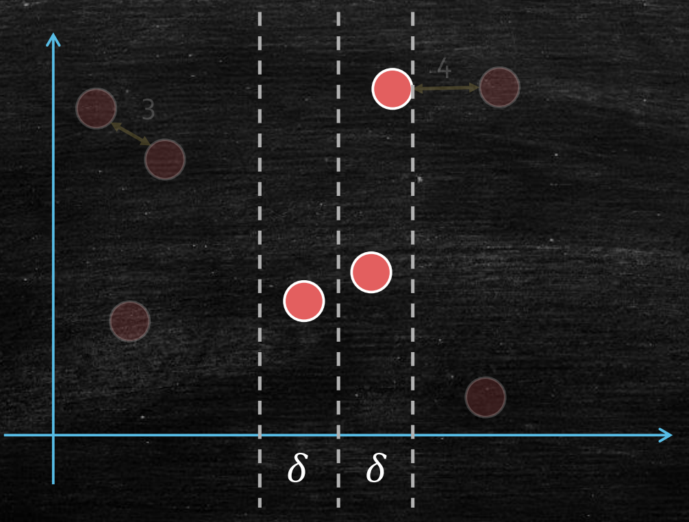
第2个聪明想法——只看矩形
那么，现在我们的问题转化为，如何找到条状区域中跨过中线的最近点对？

最直接的还是暴力法，也就是计算该区域内所有点对的距离。假设该区域内共有个点，那么暴力法的时间复杂度为。可惜的是，我们并不能知道的大小。如果，即所有点都挤在这个条状区域中，时间复杂度又会回到。看来，我们还需要更巧妙的方法。
观察可以发现，对于y方向上距离很远的点，我们也可以不用计算。（这是容易理解的，因为我们刚才只对x方向作了限制，并没有处理过y方向。）具体来说，y方向距离超过的点对不需要计算。
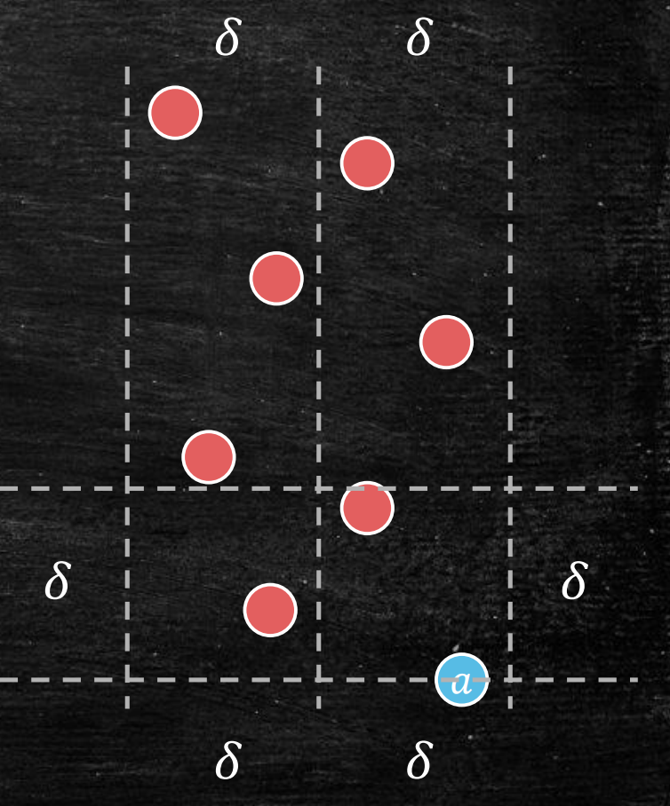
具体来说，我们先固定一个点，在的上方寻找另一个点。那么，比的y坐标大超过的点都可以不考虑，因为间的距离一定超过了。也就是说，我们只需要在如图所示的 矩形中寻找点 。
我们限制点在的上方，是为了避免重复计算。
那么，现在的时间复杂度能降低了吗？回忆一下，为什么上一次我们没能成功。那是因为条状区域中点的数量无法控制，仍有可能有个点，导致比较次数无法减少。
那么，这次的矩形区域中点的数量可以控制了吗？也就是说，会不会再出现很多点挤在矩形中的情况呢？
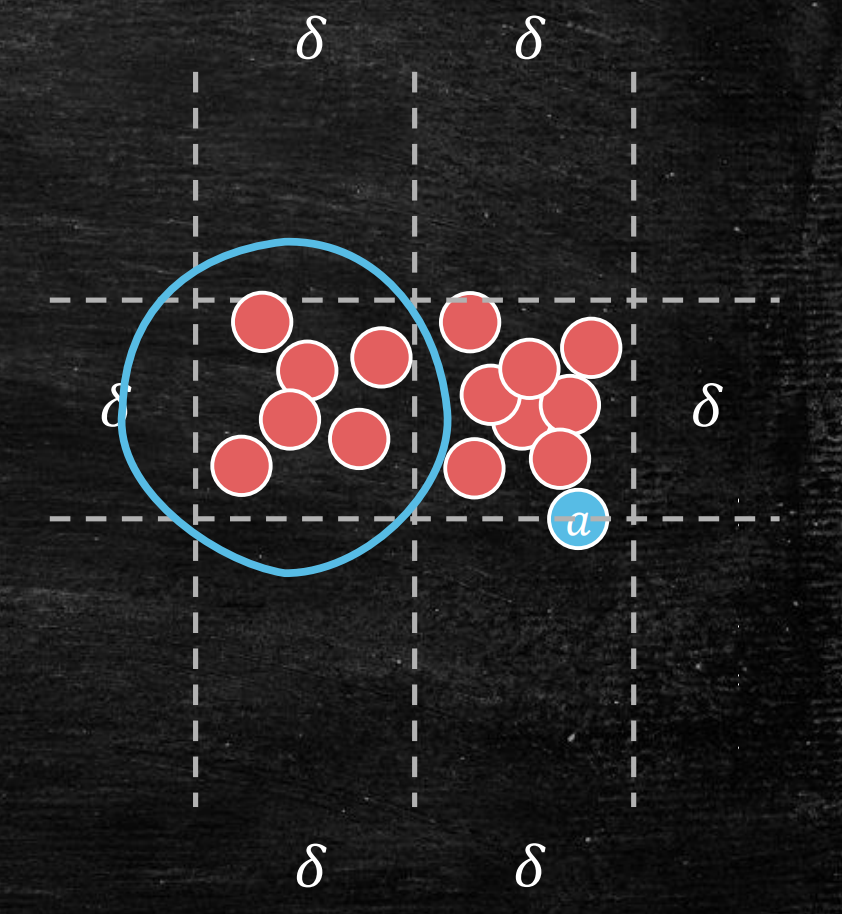
直观上看，是不会的。因为已经是中线两侧的点对的最短距离，不可能在的矩形中塞下很多个距离不小于的点。
这其实可以抽象成一个数学问题。我们不妨只关注左侧边长为 的正方形，研究其中最多能存在几个两两距离不小于的点。
我们可以将边长为的正方形划分为四个边长的小正方形。每个小正方形中的最大距离为对角线，因此最多只能放一个点。也就是说，整个大正方形最多存在4个点。
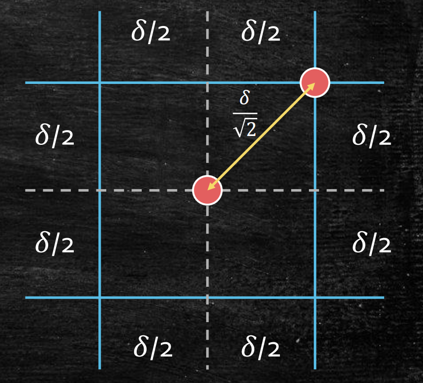
同理，右侧正方形也最多有四个点，从而整个 的矩形中最多存在8个点（包括固定的点）。也就是说，点最多只要和它上方的7个点计算距离。
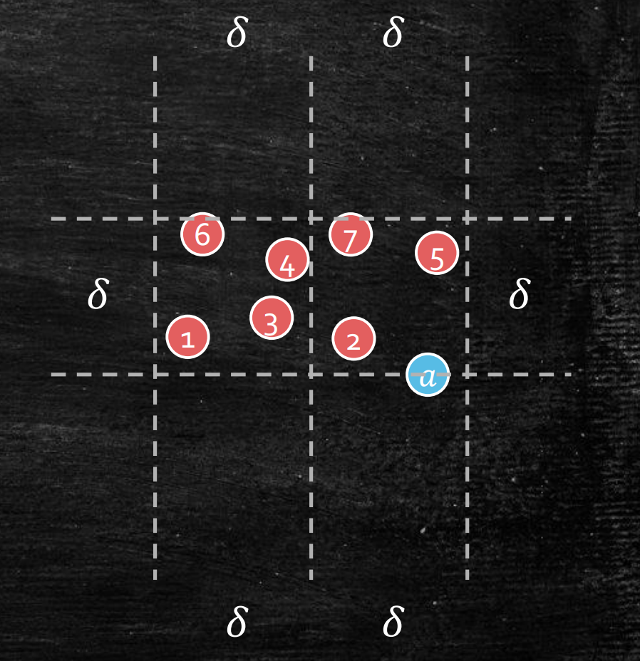
完整算法及时间复杂度分析
至此，我们得到了求最近点对的完整算法。
求最近点对算法
- 将所有点按x坐标排序
- 画一条竖线使每侧有个点
- 分别递归地找到竖线两侧的最近点对，设最小距离分别为和
- 令，设是离距离不超过的点的集合
- 对按y坐标排序
- 对中每一个点，检查中上方的7个点，找到最近点对
- 返回第3步和第6步中距离最小的点对
时间复杂度分析
该算法的时间复杂度分析如下。
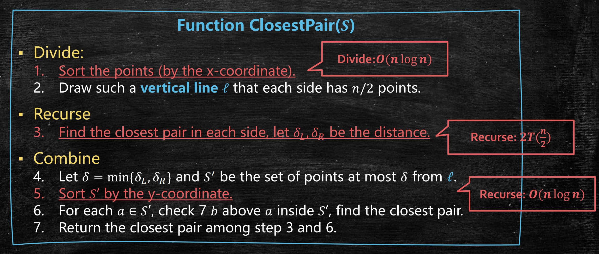
因此，我们有
注意，这里我们无法使用主定理。但可以通过数学归纳法或展开证明，
事实上，我们有更一般化的主定理：设 ，那么
算法优化思路
其实我们的算法可以进一步优化到。根据主定理，如果，那么有。因此，想要将算法的时间复杂度降到，我们必须把递归函数中的两个的排序去掉（即上图红线部分）。也就是说，我们需要把划分和合并的代价都降到。
注意，我们不可能在递归函数中保留排序，因为排序（基于比较）的最低时间复杂度为。
x坐标排序优化
如何优化划分中的按x坐标排序？事实上，我们并不需要每次都排序，因为x坐标排序的作用仅仅是寻找中线。
因此，我们只要在算法一开始做一次x坐标排序，就可以确定全部中线的位置。在第1层递归时，使用处的中线；在第2层递归时，分别使用和处的中线；以此类推。
这样，我们就将x坐标排序移到了递归函数外侧，这使得划分的时间复杂度降低到。
y坐标排序优化
相比之下，优化合并时对y坐标排序稍显困难，因为我们需要知道找到每个点上方的7个点。想要避免每次合并时排序，有以下两种思路。
-
和x坐标排序优化类似，在算法一开始对y坐标排序，并使用该序列进行递归。这样，每次递归传入的序列都在y坐标上有序，从而在每次选出后，其中的点已经按照y坐标排序好，不需要再排序。
-
和求逆序数算法类似，在找最近点对的同时做y坐标的归并排序。这样，只需要用的时间将左右分别按y坐标排好的点做一次合并，即可得到按y坐标排序的结果。
结合这两个优化，我们就将划分和合并的时间复杂度降到，从而算法整体优化到。
注：本文中所有图片均来自张宇昊老师的课程PPT。